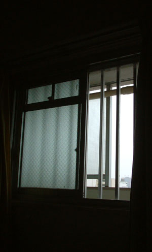

| 「お前ら、私の悪口、言ってただろっ！」
私はナース室に向かって大声で叫んだ。机に座っている女が、体をこわばらせてうつむく。三つ編みをした小柄な女が、怯えたように目をそらす。それにますます腹が立った。
「おいっ、言いたいことがあるなら、はっきり言ったらどうなんだよっ」
ナース室のガラスを力一杯たたく。何度も何度も。部屋で何回ナースコールを押しても、こいつらは来ない。ここにちゃんといるのに、返答しない。私が死んだって何だってかまわないんだ。腹が立って握りこぶしに力が入る。ガラスに亀裂が入って、女の悲鳴が聞こえた。
「杉田さーん、やめてくださいよ」
やっとドアを開けて人が出てきたと思ったら、一番嫌いな看護士だった。竹森かおり。
「はい、その手、出してください」
言われて右手に痛みがあることに気づいた。ガラスを叩いて、すでに血まみれになっている。私は仕方なく、手を前に出した。竹森は手にしている消毒薬と包帯でテキパキと手を動かす。
「お前、私の悪口、言ってただろ」
「言ってませんよ」
長い睫毛を下に向けたまま、顔色一つ変えずに、竹森は言う。
「でも、確かに聞こえたんだ。もう退院してほしいって。おばさんの相手が疲れたって」
「幻聴ですね。これが終わったら、注射しましょうね」
包帯を巻きおわり、あとはテープを止めれば終わり、というところで私は右手を振り払った。
「なんでナースコール、出ないんだよっ」
竹森の手からはさみが落ちた。
「ちょっとぉ、危ないじゃないですか」
こいつは冷静だ。全く動揺していない。この冷静さが、とても癇に触るんだ。
“刺さっちゃえば、良かったんだ”
突然、耳元で若い女の声が聞こえる。背中がひんやり冷たくなった。
“死んじゃえばいいんだよ。ほら、その看護婦さんのはさみ、持ってごらん。それで胸をひとつきすれば簡単、簡単”
笑い声まで聞こえる。
“この世界には、お前を必要としている人なんていないんだ。そうだろう。こっちにおいで”
凍りついたまま、必死に首を振る。竹森は急に固まった私を、大きな目でじっと見つめる。すぐに背を向けて、ナース室に入ったかと思うと、注射を手にして出てきた。
「杉田さん、こっちに来て」
竹森が嘘くさい笑顔で言う。
“その注射の中身は、毒だよ。あんたを殺す、毒だよ。良かった、これで死ねるねぇ”
「どうしたの、杉田さん」
竹森のいぶかしげな声と、耳元のフッ、フッという若い女の笑い声が重なって聞こえる。私は頭を振って、走った。病院の廊下を必死で走った。男性看護士らしき人がものすごい勢いで追いかけてきて、私の体を抑えつける。床にうつぶせになった状態で注射を打たれた。そのまま引きづられるように、病室に入れられる。だんだん頭が真っ白になっていく。恐怖の耳元の声も、周りのざわめきも、聞こえなくなる。閉じたまぶたに懐かしい顔が浮かんだ。
「娘は、ねぇ、みちるはどこに行ったの？」
自分の声が遠くで聞こえる。気づいたら、眠っていた。
部屋の中はシンとして、窓から入りこむ夕焼けの光が穏やかに見える。いつもならこの時間は、お母さんの怒鳴り声に疲れて、取っ組み合いの喧嘩が始まる頃。
お母さんがいないのって、いいな……。そんな気持ちがわきあがってきて、私は慌てて首を振る。
「お母さん、元気かな」
声に出してそう言ってみたら、“お母さんを心配している娘”に思えて、何だかほっとする。自分まで普通じゃなくなったら、全てが崩壊してしまう。でも最近自分の感覚が信じられなくなる。お母さんが死んじゃえばいいって思ってしまう時もある。私も普通じゃなくなってるのかもしれない。いつかお母さんを殺してしまったら……。
一昨日、暴れるお母さんを抑えている時、包丁が光って見えた。自分が怖くなって、私は都外に住んでいる姉に久しぶりに電話をした。
「お姉ちゃん、何だか疲れちゃった」
「あの人は、相変わらずなの？」
“あの人”とは、母のことだ。やわらかな姉の声を聞いたら、頬に涙が滑り落ちた。
「部屋に帰ると皿がたくさん割れていたり、私じゃなくて壁に向かって怒鳴っている時もあるし。かと思うと、窓の外を見つめてぶつぶつ言ってたり、何時間もボーッとしてたり……」
「一生ボーッとしていてくれたら、いいのにね」
憎悪をこめた姉の声。それには気づかない振りをして、私は「どうしたらいいかわからないんだ」とつぶやいた。
「薬は飲んでるの？」
また優しい声に戻って、姉が言う。
「たぶん飲んでない。一応飲ませようとしてるんだけどね、捨ててる気がするんだ。トイレの中で飲むって言ってきかないから、そうさせてるけど……」
「もう、みちる、限界でしょ」
声が出ない。電話口の前で私は小さくうなづいた。
「入院させよう」
姉ははっきりそう言い放った。翌日、かかりつけの個人病院の紹介状を手に、姉はうちにやって来た。わけのわからない事を言って叫ぶ母の両手をビニールテープで巻き、タクシーに押し込む。「みちる、少し休みな」そう言い残し、姉はこの地域一番の総合病院へ母を連れて行ったんだ。
昔のお母さんは普通の人だった。
少なくとも私が幼稚園の頃は、多少涙もろいところはあったけど普通のお母さんだった気がする。お弁当だって作ってくれたし、お父さんと笑っている時もあったように思う。今の母を見ると、そんな光景は私の妄想だったんじゃないかとも思ってしまうけど、でも姉に聞いても、確かに昔は普通の人だったと言う。おかしくなったのは、私が小学校にあがる頃、弟が突然死したことが引きがねになったらしい。母は男の子がほしかったから、姉、私の次に産まれた弟を溺愛していた。でもわずか１歳に満たないうちに、弟は死んでしまった。
弟が死んでから、母は夜中に近所を徘徊するようになった。姉や私に「お前たちに殺されたんだ」と暴言を吐くようになった。父を包丁で切りつけることもあった。当時は、子供の死による一時的なショックだと精神科医に言われ、父も、当時まだ小学校６年生だった姉も、母を助け、励ましてきたという。薬を飲めば良くなるものの、止めれば悪くなるの繰り返し。精神科に入院し、退院する頃には良くなるけど、やがて薬を飲まなくなり症状は悪化していった。薬を飲むと症状が良くなるように見えるのに、どうしてだか母は飲むことを嫌がった。
そして私が小学校５年生になった、ある夜、父が私を台所に呼んだ。
「みちる、学校は楽しいか」
私に缶ジュースを渡しながら、父が穏やかに聞いてきた。
「あんまり楽しくない」
私は正直にそう言った。母が大声で何かを叫びながら近所をうろつき、警察に通報されることもしばしばで、学校では“きちがいの娘”とからかわれていた。母のことはかわいそうだと思うけれど、でも母によって自分の居場所が失われるのは辛かった。
「ごめんな」
父は何も聞かずに、一言そう言った。うつむいて、肩を震わせていた。この時、初めて私は父の気持ちを意識した。母がおかしくなって約５年、父は近所に何と言われようと、母をかばい、姉と私を励まし、仕事と家事を両立してきた。弱音を吐いたことは、一度もない。
「お父さんが謝ることないじゃん」
私は父の肩に手をかけて、優しく言った。父の頭がかすかに上下にふれている。縮こまる父がかわいそうでならなかった。
だから翌日、父が家を出て行ったことがわかった時、怒りは全くなかった。どこかほっとした気持ちもある。これでお父さんが解放された、良かった、とさえ思った。
姉は怒り狂い、出ていった父をののしった。
「あの人を押しつけられて、これから私たちにどうしろって言うのよ」
父が出て行ってから、母を病院に連れていくのも、家事も、全て私たちが背負わなければならなくなった。
「でも、お父さん、手紙に生活費を振り込んでくれるって書いてあるし、私たちには居場所も教えてくれてるんだから。何とか頑張ろうよ」
笑顔を作って言う私に、姉は頭をかきむしりながら叫んだ。
「どう頑張れって言うのよ。もう十分頑張ってきたわよ。あんたは小さいから、まだ事の重大さがわかってないっ」
確かに姉は、小学校の頃からずっと父と母を支えてきた。それに比べて私は、自分の生活に精一杯で、姉の言われた家事を少し手伝うくらい。でもこれからは、私が姉を支えなきゃいけない。
それから６年間、姉と私は二人で力を合わせて生きてきた。生活費は父がずっと振り込んでくれたから困らなかったけど、夜中に何度救急車や警察に駆け込んだだろう。母は、いきなり悲鳴をあげたり、意味不明なうなり声を発したり、「娘たちに虐待を受けている」という嘘を近所に流したり……“普通の人”だった日は１日もなかった。私たちが朝まで熟睡できた夜も１回もなかった。
そして、ついに姉の限界がやってきた。私が15歳、姉が21歳の時だ。姉は激しい過呼吸の発作におそわれて、苦しそうに顔をゆがめながらも、私の顔をしっかり見て言った。
「みちる、もう、出て行こう」
うなづきたかった。ここでうなづけば、全てが終わる。もう母のことは見捨てるんだ。隣の部屋から、母のひとり言が絶え間なく聞こえてくる。
でも、何故か首を横に振っていた。やっぱり見捨てることなんてできない。母だって、私を産み、育ててくれた時期があるんだ。いつかきっと元の母に戻ると信じたかった。
姉は一瞬、悲しそうに顔をゆがめ、安定剤を口にほおりこんだ。しばらくして落ちついてから、姉はもう一度私の気持ちを確認した後、「でも、私は出ていくね」ときっぱり言った。
「みちるのことは心配だけど、もうこれ以上、私はあの人に振りまわされたくないの。普通に結婚して、子供をもって、普通の家庭に住みたい」
姉の瞳はうるんでいた。
「知ってる？ お父さんも、新しい家族もったんだって。バツ１の女の人と、その人の息子さんと、３人で暮らし始めたんだよ」
初めて聞いた。そっかぁ、もう私だけのお父さんじゃないんだな。父が出ていく直前に、二人で話したことを懐かしく思いだした。黙っている私に、姉は続けて言う。
「お父さんがうらやましいの。私も自由になりたい。幸せになりたい。みちるにもそうなってほしいと思ってるよ。辛くなったら、いつでも連絡ちょうだい。うちに逃げてきてもいいよ。……ねぇ、みちる、私はひどい娘なのかなぁ」
あれだけ気丈だった姉が、突然ぽろぽろ涙をこぼしながら言った。「そんなことないよ」精一杯陽気な声で言ったけど、言葉尻は少し震えていた。
「お姉ちゃん、元気でね」
姉はうなづき、そして出て行った。
あれから７年。母が病気になって、もう15年も経ったんだ……。
ぼんやり考えていて、気づいたらあたりは暗くなっていた。
突然、電話のベルが鳴って、びくっとする。
「もしもし、杉田です」
「○×病院の看護士の竹森です。杉田みちるさんはいらっしゃいますか？」
母が入院した病院だ。体が硬くなる。「私です」小さな声で言った。電話の向こうの若い女性の声が一気にくだけた口調になる。
「あぁ、やっぱり。昨日、お姉さんに連れられて、お母さんがうちへ入院されたことはご存じですよね？」
「はい。あの、母は、元気ですか」
かすれた声が出た。
「幻聴がひどいみたいで暴れてます」
内容は暗いのに、明るい声だった。
「それで、みちるさんと二人暮らしということで、先生があなたと一度お話したいとおっしゃってるんです。明日来れますか。あぁ、良かった。お母さんは随分あなたを頼ってらっしゃるんですね。色々大変かと思いますが、一緒に頑張りましょう」
今までの病院関係者は重々しい口調で語る人が多かったのに、竹森さんというこの看護婦さんの明るさに驚いた。同時に好感がわく。少し軽い気持ちになって、受話器を置いた。
翌日の午後、○×病院へ向かった。母とは会わない。会うことはお互いにマイナスになるからと竹森さんに言われ、今日はあくまで先生と話すことだけが目的だった。
入院病棟とは別の、真新しい棟の中に入り、指定された部屋で待っていると先生が入ってきた。
「杉田みちるさん、ですね。担当医の川辺です。こちらは看護士の竹森」
私は軽く頭を下げる。昨日電話してきた、竹森さんが私に微笑んでくれた。母の病状の説明、治療の方針など細かく説明を受ける。
「入院の目安は１カ月と考えています。その後は、ご自宅でのフォローが肝心です」
竹森さんがテキパキと言う。
「フォローと言うと……？」
「薬をしっかり飲ませてください」
川辺医師が、私を直視した。そして薬を飲む必要性、飲まなかった場合の病状の進行をホワイトボードに書きこみながら丁寧に説明しくれる。
「母が飲むのを嫌がっても、飲ませるんですよね」
ホワイトボードを見ながら、私は言った。
「そうです」
竹森さんが、私の隣に座る。副作用が出たら、副作用止めを飲ませる。とにかく病気が治るまで、場合によっては一生薬を飲ませることが、安住できる唯一の方法らしい。
「ごまかしたりして飲まなかったら、ごはんに混ぜてでも飲ませてください」
私は竹森さんの顔を見返す。竹森さんがうなづく。やるしかない。飲ませるしかない。元気なお母さんに戻ってもらうために。強く握りこぶしをつくりながら、私はホワイトボードに書き込まれた、先生の文字を見つめていた。（つづく）

|